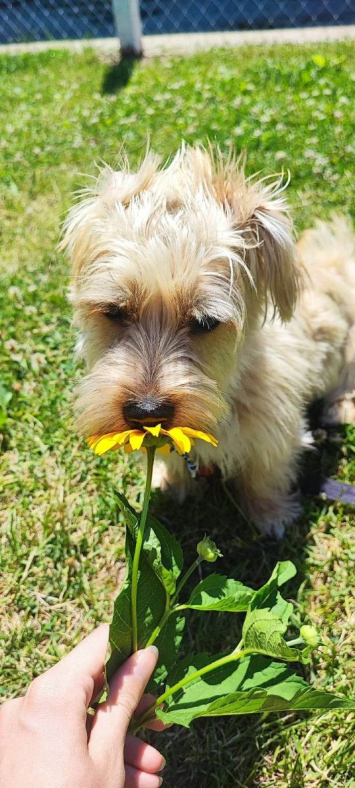

Van egy kis felesleges pénze, és nem tudja, hogy mire költse? Vegyen egy képet az én drága kiskutyámról, Lokiról! Igazán fotogén, szép képek készülnek róla, modell alkat! Ha nem veszi észre a telefont... Na mindegy is, vegyen egy képet a kiskutyáról! Higgye el, megéri!
Loki szülinapjára nagy csontot kapott

Loki 2022-ben, az első szülinapjára hatalmas csontot kapott ajándékként.
666$
Loki a fess férfiú

Nyáron a nagy meleg miatt rövidre nyírtuk a szőrét, igazi foxi kutyus lett belőke! És milyen elegáns!.
666$
Loki hosszú szőrrel is hódít

Loki örökölte anyjától a hatalmas és pihepuha bundát. Igazi boldog havanese fiú!
666$
Loki kifordult füle

Loki félig tacskó, ennek jele az iszonyúan hosszú test, valamint az állandóan, főleg futás küzben kiforduló fülecske.
666$
Loki igazi férfi

Hogy is lehetne ijesztőbb, mint egy bőrhámmal? Igen. Ez kell, hogy visszatartsa azt a hatalmas 6,5 kg-ot!
666$
Loki tacskó öröksége

Anyja havanese, apja tacskó. A szőr az anyjától, a hosszú test az apjától van. Ezért lóg ki a képből is.
666$
Lokinak kell egy napszemüveg

Nyár, tűző nap, hatalmas meleg. Elengedhetetlen lenne egy napszemüveg. Valószínűleg ő is éppen erre gondol.
666$
Loki ellopja a labdám

Egyébként én kaptam, de nem vagyok irigy. Nagyon vicces mikor kergeti, megfogni nem tudja.
666$
Loki elvarázsol

Ki tudna ellenállni egy ilyen mosolynak? Tudom. Én sem. Ezért ebédel napi háromszor...
666$
Loki első szülinapja

Első szülinap, milyen nagy már a kiskutya! Augusztus 15.-e mindjárt itt van, és betölti a kettőt!
666$
Loki vegán étrendre tér át
Jó, nem lett vegán. Pedig úgy tűnt, hiszenn bármilyen virágot ültettünk, neki muszáj volt megkóstolnia!
666$